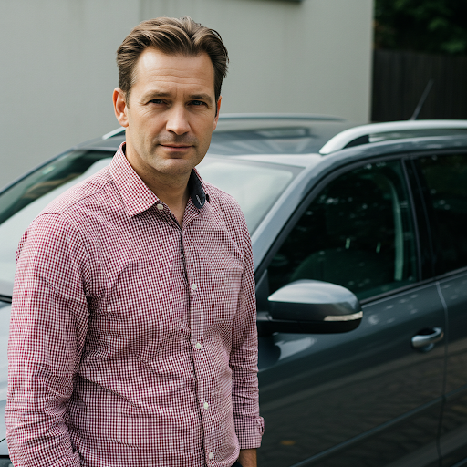
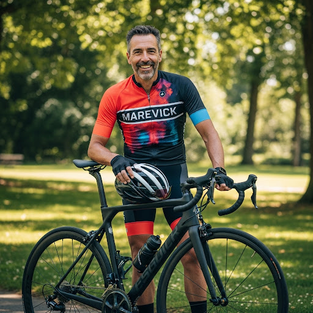

Avis sur Antoine.A (42 ans)

Antoine.A (Note moyenne : ⭐⭐⭐⭐⭐)
Avis détaillés (7) :
-
Hela (⭐⭐⭐⭐⭐)
"Antoine est tout simplement parfait. Ponctuel, courtois, et sa voiture est d'un confort exceptionnel. J'ai particulièrement apprécié sa capacité à adapter la conversation à mes envies. Un vrai professionnel !" -
Belle.C (⭐⭐⭐⭐⭐)
"Avec Antoine, on sait que le voyage se déroulera sans le moindre souci. Sa communication est claire et précise, sa voiture est impeccable, et il conduit avec une grande prudence. C'est un conducteur très rassurant." -
 CamilleRose (⭐⭐⭐⭐⭐)
CamilleRose (⭐⭐⭐⭐⭐)
"Mon voyage avec Antoine a été parfait du début à la fin. Sa communication avant le départ était excellente, sa voiture était très confortable, et il a su adapter la conversation à mes envies. Un conducteur que je choisirai à nouveau sans hésiter." -
NikoK (⭐⭐⭐⭐⭐)
"Je voyage régulièrement avec Antoine sur l'axe Caen-La Rochelle, et je suis toujours ravi de ses services. Sa ponctualité est remarquable, sa conduite est souple, et sa Skoda Octavia est très agréable pour les longs trajets. Je recommande vivement." -
Mme.TZ (⭐⭐⭐⭐⭐)
"La ponctualité d'Antoine est tout simplement incroyable. Il est toujours à l'heure, voire en avance. Sa voiture est spacieuse et confortable, et il est très agréable de discuter avec lui. Un conducteur exceptionnel !" -

MaverickDM (⭐⭐⭐⭐⭐)
"Après avoir testé de nombreux conducteurs sur l'axe Tours-Paris, je peux affirmer qu'Antoine est le meilleur. Sa ponctualité, son professionnalisme et sa gentillesse sont incomparables. Je ne peux que le recommander chaudement."
-
 Le_JL (⭐⭐⭐⭐⭐)
Le_JL (⭐⭐⭐⭐⭐)
"Je ne trouve pas de mots assez forts pour décrire à quel point mon voyage avec Antoine a été agréable. Il est ponctuel, courtois, sa voiture est impeccable, et il est très respectueux du silence des passagers. Un conducteur exceptionnel à tous points de vue."